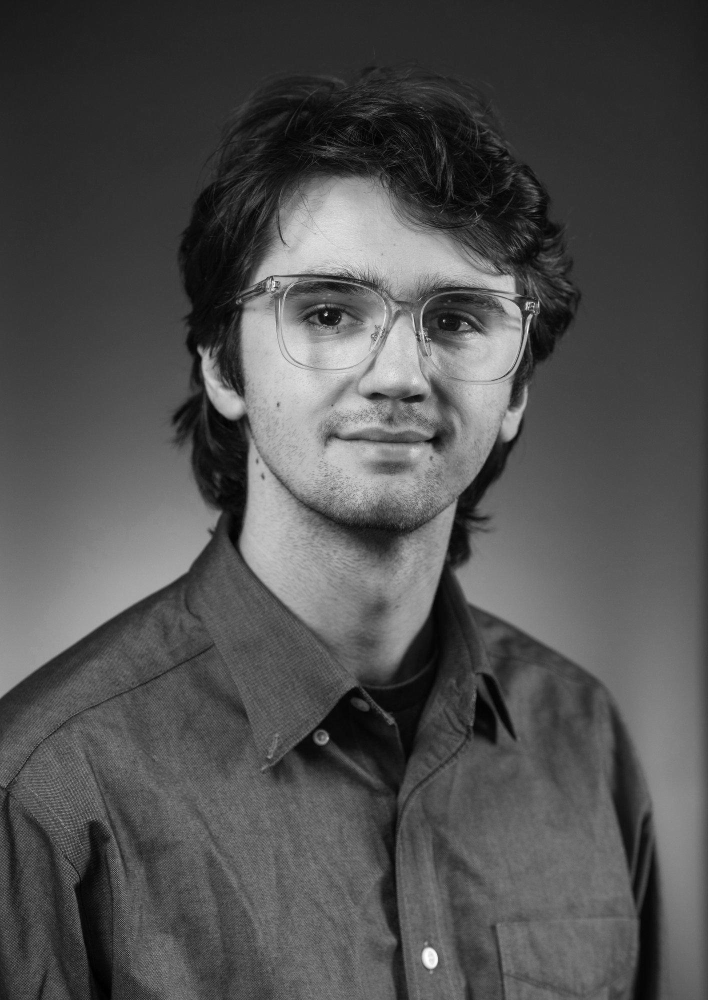

Caleb McCarthy is a student Filmmaker from Northern California, attending Cal Poly Humboldt. Caleb writes, directs, and edits his own short films spreading across multiple genres. Beyond this Caleb has worked on many other projects as the Director of Photography, sound recordist, editor, and even actor.